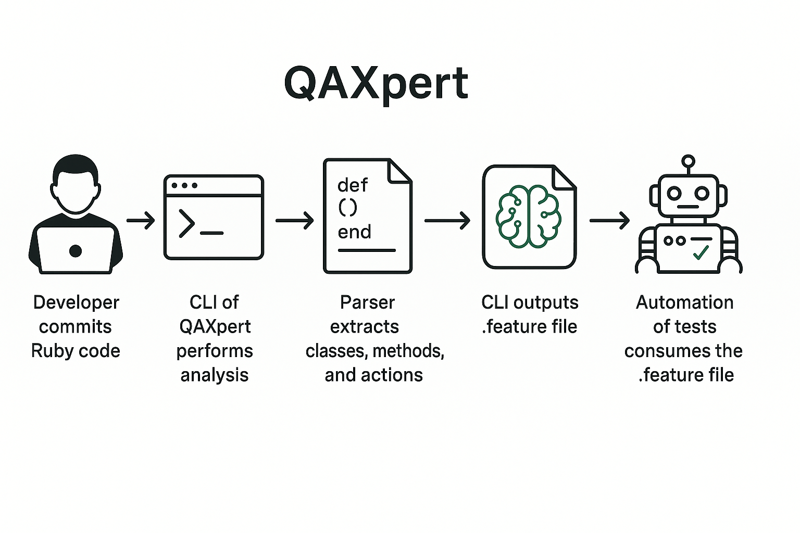

Como funciona
QAXpert analisa código, histórico de bugs e mudanças em tempo real, sugerindo cenários de teste, melhorias em cobertura e refatorações com apoio de IA.
Funcionalidades
- ✅ Geração de cenários BDD com base no código
- ✅ Análise de commits e alterações via Git
- ✅ Integração com Jira para análise de issues
- ✅ Sugestões com base na cobertura de testes (SimpleCov)
- ✅ Avaliação de qualidade de cenários .feature